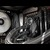

| LOGO | TÉMA | ODKAZ | POPIS |
|---|---|---|---|
| VS Code | Výukové materiály | Lehký textový editor pro vývoj softwaru s podporou různých programovacích jazyků. | |
| GitHub | Výukové materiály | Platforma pro uložení souborů se spolupráci na vývoji softwaru pomocí Git. | |
| Python | Výukové materiály | Programovací jazyk, který není až tak obtížný na vytváření softwaru. | |
| Počítačové Sítě | Výukové materiály (Wiki) | Systém propojení více počítačů pro výměnu dat a sdílení zdrojů. | |
|  | Hardware | Výukové materiály (Wiki) | Fyzické komponenty počítačů a jiných elektronických zařízení. |
| Databáze | Výukové materiály (Wiki) | Organizovaný systém pro ukládání, správu a přístup k datům. |